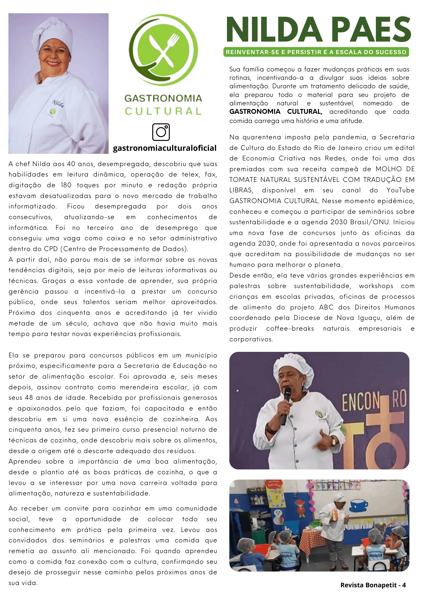

Gastronomia Cultural📗Workshop, oficinas e palestras. 🍽 Alimentação natural, sustentável e inclusiva.
Gastronomia Cultural📗Workshop, oficinas e palestras. 🍽 Alimentação natural, sustentável e inclusiva.
Saiba mais sobre a fundadora da Gastronomia Cultural, Nilda Paes.
Edição completa da revista: Revista Digital Bonapetit. Junho de 2024.
